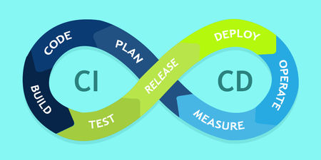

Requirements:
- When Code is pushed to Github it should execute and produce the following reports
- Coverage Report
- Code Quality
- Code Spell
- Duplication
- Detect Dead Code
- All the reports should be generated in the branch in GIT. So that the master commit can be cleaner and don’t have multiple unnecessary commits.
- All the changes should automatically reflect without changing any configuration.
- In the Master branch in GIT, it should only build and check if it’s working. The maintainer of the GIT repository will have to check the essential and final commits in the branch and merge it with the master as per the requirement.
Introduction
The article is divided into 2 parts. The first part is about how to use the tool. The second is the bit detail of how it was working.
- How to use it
- How does it work
The following are the tools used to build the requirement.